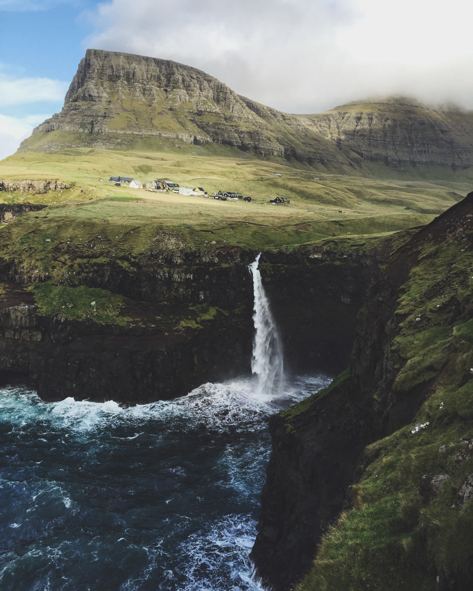

The Faroe Islands is a self-governing archipelago, part of the Kingdom of Denmark. It comprises 18 rocky, volcanic islands between Iceland and Norway in the North Atlantic Ocean, connected by road tunnels, ferries, causeways and bridges. Hikers and bird-watchers are drawn to the islands’ mountains, valleys and grassy heathland, and steep coastal cliffs that harbor thousands of seabirds.
Etymology
In Faroese, the name appears as Føroyar. Oyar represents the plural of oy, older Faroese for "island". Due to sound changes, the modern Faroese word for island is oyggj. The first element, før, may reflect an Old Norse word fær (sheep), although this analysis is sometimes disputed because Faroese now uses the word seyður (from Old Norse sauðr) to mean "sheep". Another possibility is that the Irish monks, who settled the island around 625, had already given the islands a name related to the Gaelic word fearrann, meaning "land" or "estate". This name could then have been passed on to the Norwegian settlers, who then added oyar (islands). The name thus translates as either "Islands of Sheep" or "Islands of Fearrann".
History
Archaeological evidence shows settlers living on the Faroe Islands in two successive periods before the Norse arrived, the first between 300 and 600 AD and the second between 600 and 800 AD. Scientists from the University of Aberdeen have also found early cereal pollen from domesticated plants, which further suggests people may have lived on the islands before the Vikings arrived.[15] Archaeologist Mike Church noted that Dicuil (see below) mentioned what may have been the Faroes. He also suggested that the people living there might have been from Ireland, Scotland, or Scandinavia, possibly with groups from all three areas settling there.
History
Archaeological evidence shows settlers living on the Faroe Islands in two successive periods before the Norse arrived, the first between 300 and 600 AD and the second between 600 and 800 AD. Scientists from the University of Aberdeen have also found early cereal pollen from domesticated plants, which further suggests people may have lived on the islands before the Vikings arrived.[15] Archaeologist Mike Church noted that Dicuil (see below) mentioned what may have been the Faroes. He also suggested that the people living there might have been from Ireland, Scotland, or Scandinavia, possibly with groups from all three areas settling there.
Nature